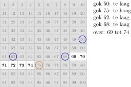
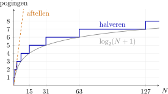
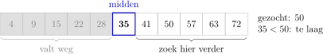
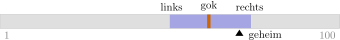
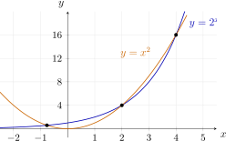
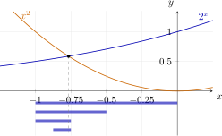
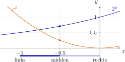
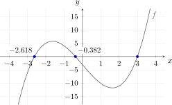
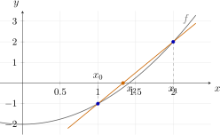
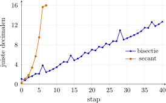

Zoeken en benaderen
I Informaticawetenschappen
1 Van programma naar algoritme
Je kent de bouwstenen van Python. Maar wat schrijf je ermee op? Daar gaat de informatica over.
Een algoritme is een methode die een probleem stap voor stap oplost, zo precies dat een computer ze kan uitvoeren. Een programma is een algoritme in één bepaalde taal.
Enkele bekende algoritmen:
-
• Euclides: de grootste gemene deler;
-
• sorteren: een lijst van klein naar groot;
-
• routeplanner: de snelste weg;
-
• zoeken: snel iets terugvinden.
2 Wat doen we in dit hoofdstuk?
Geen nieuwe Python, enkel:
-
• variabelen;
-
• if;
-
• while.
Nieuw is de manier van denken.
Drie ideeën:
-
1. raden door te halveren: \(1\) tot \(100\) in hoogstens \(7\) pogingen;
-
2. een nulwaarde zoeken door te halveren: de bisectiemethode;
-
3. benaderen met een rechte: de secantmethode, veel sneller.
Bij elk idee twee vragen:
-
• juist: werkt het altijd?
-
• snel: hoeveel stappen zijn er nodig?
Eén regel zetten we voor je klaar: die geeft een wiskundige functie een naam, zodat je ze kunt gebruiken zoals abs() of round().
II Raad het getal
1 Een slimme strategie
Iemand denkt aan een getal van \(1\) tot \(100\). Jij raadt en hoort enkel te hoog, te laag of juist.
-
• één voor één: werkt altijd, maar tot \(100\) pogingen;
-
• telkens het midden: elke gok sluit de helft uit.

Na vier gokken blijven er hoogstens zes getallen over.
2 Waarom hoogstens zeven pogingen?
Elke gok halveert wat nog kan:
\[ 100 \xrightarrow {\text {gok 1}} 50 \xrightarrow {\text {gok 2}} 25 \xrightarrow {\text {gok 3}} 12 \xrightarrow {\text {gok 4}} 6 \xrightarrow {\text {gok 5}} 3 \xrightarrow {\text {gok 6}} 1 \]
-
• na \(6\) gokken blijft er één getal over;
-
• gok \(7\) is dus zeker juist.
Twee keer zoveel getallen? Maar één gok extra.
\[ \begin {array}{r|r|r} \text {getallen} & \text {aftellen} & \text {halveren} \\ \hline 100 & 100 & \opl [0pt]{7} \\ 1\,000 & 1\,000 & \opl [0pt]{10} \\ 1\,000\,000 & 1\,000\,000 & \opl [0pt]{20} \\ 8\,000\,000\,000 & 8\,000\,000\,000 & \opl [0pt]{33} \end {array} \]
Met \(33\) vragen vind je één mens op de hele wereld.
Voor de hele wereldbevolking moet je wel iedereen op een rij kunnen zetten.
3 Halveren en logaritmen
Met \(n\) pogingen vind je een getal uit \(2^n - 1\) mogelijkheden. Waarom? Teken de boom in oefening 2. Hoeveel pogingen heb je nodig voor \(N\) getallen?
\[ 2^n - 1 \geq N \iff 2^n \geq N + 1 \iff n \geq \opl [0pt]{\log _2 (N+1)} \]
Het aantal pogingen is \(\log _2(N+1)\), naar boven afgerond.
\[ \begin {array}{r|r|r} N & \log _2(N+1) & \text {pogingen} \\ \hline 100 & \opl [0pt]{6.66} & 7 \\ 1\,000 & \opl [0pt]{9.97} & 10 \\ 1\,000\,000 & \opl [0pt]{19.93} & 20 \\ 8\,000\,000\,000 & \opl [0pt]{32.90} & 33 \end {array} \]
Tien keer zoveel getallen? Maar \(\log _2 10 \approx 3.3\) pogingen extra.

Het aantal stappen groeit als een logaritme: binair zoeken is logaritmisch.
Op het rekentoestel: \(\log _2 x = \dfrac {\log x}{\log 2}\).
4 Binair zoeken
Deze strategie heet binair zoeken: vergelijk met het midden en houd één helft over.

Werkt enkel als de hoop gerangschikt is:
-
• getallen van klein naar groot;
-
• woorden in een woordenboek;
-
• namen in een klaslijst.
Zonder volgorde? Dan valt er niets te halveren.
Waarom binair? Links of rechts, dus twee (bi) keuzes.
Een lijst ordenen om er sneller in te zoeken, deden de Babyloniërs rond 200 voor Christus al. Binair zoeken als algoritme werd voor het eerst vermeld in 1946, door John Mauchly, een van de bouwers van de ENIAC. Het bleek moeilijker dan het lijkt: de gepubliceerde versies werkten enkel voor lijsten met \(1\), \(3\), \(7\), \(15\), … elementen, tot Derrick Lehmer in 1960 een versie gaf die voor elke lengte werkt.
5 De computer raadt
Eerst zelf op papier: oefening 1.
-
• geheim: het getal dat de computer zoekt;
-
• links en rechts: het kleinste en grootste getal dat nog kan;
-
• de if zegt te hoog of te laag.
Stap met de bugknop door de code.

geheim = 71
links = 1
rechts = 100
gok = (links + rechts) // 2
pogingen = 1
while gok != geheim:
if gok < geheim:
links = gok + 1
else:
rechts = gok - 1
gok = (links + rechts) // 2
pogingen += 1
print("Gevonden:", gok, "na", pogingen, "pogingen")Waarom //? Gehele deling: 151 // 2 is \(75\), niet \(75.5\).
Waarom gok + 1? Van gok weten we al dat het niet juist is.
Speelt de computer vals? Nee: hij vergelijkt enkel met geheim.
6 Pen-en-papieroefeningen
Oefening 1
Voer dit programma uit op papier. Noteer bij elke gok links, rechts en gok. Controleer daarna op de site met de bugknop bij De computer raadt.
geheim = 71
links = 1
rechts = 100
gok = (links + rechts) // 2
pogingen = 1
while gok != geheim:
if gok < geheim:
links = gok + 1
else:
rechts = gok - 1
gok = (links + rechts) // 2
pogingen += 1
print("Gevonden:", gok, "na", pogingen, "pogingen")\(50\), \(75\), \(62\), \(68\), \(71\)
\[ \begin {array}{c|c|c|l} \texttt {links} & \texttt {rechts} & \texttt {gok} & \\ \hline 1 & 100 & 50 & \text {te laag} \\ 51 & 100 & 75 & \text {te hoog} \\ 51 & 74 & 62 & \text {te laag} \\ 63 & 74 & 68 & \text {te laag} \\ 69 & 74 & 71 & \text {juist} \end {array} \]
Het programma vindt \(71\) na \(5\) pogingen.
Oefening 2
Het programma raadt een getal van \(1\) tot \(15\). Teken een boom: bovenaan de eerste gok, daaronder de gok na te laag links en na te hoog rechts, enzovoort.
-
(a) Hoeveel getallen vindt het programma bij de eerste, de tweede, de derde en de vierde gok?
\(1\), \(2\), \(4\) en \(8\)
Elk niveau van de boom telt twee keer zoveel getallen als het vorige.
-
(b) Leg met de boom uit waarom je met \(4\) pogingen hoogstens \(15\) getallen aankunt. Hoeveel zijn het er met \(5\) pogingen?
\(1 + 2 + 4 + 8 = 15\); met \(5\) pogingen \(31\) Met \(4\) pogingen heeft de boom \(4\) niveaus, samen \(1 + 2 + 4 + 8 = 15 = 2^4 - 1\) getallen. Een vijfde niveau telt \(16\) getallen, dus met \(5\) pogingen zijn het er \(15 + 16 = 31 = 2^5 - 1\).
Oefening 3
Het programma raadt een getal van \(1\) tot \(100\).
-
(a) Welke getallen vindt het bij de tweede gok?
\(25\) en \(75\) Na te hoog bij \(50\) is de gok \((1 + 49) \mathbin {//} 2 = 25\), na te laag is ze \((51 + 100) \mathbin {//} 2 = 75\).
-
(b) Geef een getal waarvoor het programma \(7\) pogingen nodig heeft.
bijvoorbeeld \(100\) Voor \(100\) zijn de gokken \(50\), \(75\), \(88\), \(94\), \(97\), \(99\) en \(100\).
-
(c) Voor hoeveel getallen heeft het \(7\) pogingen nodig?
\(37\) Met \(6\) pogingen vindt het hoogstens \(2^6 - 1 = 63\) getallen. De overige \(100 - 63 = 37\) getallen vindt het pas bij de zevende gok.
Oefening 4
Iemand past in het programma uit De computer raadt de regel links = gok + 1 aan tot links = gok.
-
(a) Voer het aangepaste programma uit op papier, met geheim = 100. Noteer bij elke gok links, rechts en gok.
het programma blijft \(99\) gokken
\[ \begin {array}{c|c|c|l} \texttt {links} & \texttt {rechts} & \texttt {gok} & \\ \hline 1 & 100 & 50 & \text {te laag} \\ 50 & 100 & 75 & \text {te laag} \\ 75 & 100 & 87 & \text {te laag} \\ 87 & 100 & 93 & \text {te laag} \\ 93 & 100 & 96 & \text {te laag} \\ 96 & 100 & 98 & \text {te laag} \\ 98 & 100 & 99 & \text {te laag} \\ 99 & 100 & 99 & \text {te laag} \\ 99 & 100 & 99 & \dots \end {array} \]
-
(b) Leg uit wat er misgaat.
\((99 + 100) \mathbin {//} 2 = 99\), dus links schuift niet meer op Zodra rechts één meer is dan links, is de gok gelijk aan links. Is die te laag, dan krijgt links opnieuw dezelfde waarde en verandert er niets meer: de lus stopt nooit. Met links = gok + 1 valt de gok zelf weg, en wordt het interval bij elke gok kleiner.
Oefening 5
In deze gerangschikte lijst zoeken we \(40\) met binair zoeken.
\[ \begin {array}{c|*{15}{c}} \text {plaats} & 1 & 2 & 3 & 4 & 5 & 6 & 7 & 8 & 9 & 10 & 11 & 12 & 13 & 14 & 15 \\ \hline \text {getal} & 3 & 7 & 11 & 14 & 19 & 23 & 28 & 31 & 36 & 42 & 47 & 53 & 58 & 64 & 70 \end {array} \]
links en rechts zijn nu plaatsen in de lijst, en het midden is de plaats (links + rechts) // 2.
-
(a) Noteer bij elke stap links, rechts, het midden en het getal dat daar staat.
het midden is achtereenvolgens \(8\), \(12\), \(10\) en \(9\)
\[ \begin {array}{c|c|c|c|l} \texttt {links} & \texttt {rechts} & \text {midden} & \text {getal} & \\ \hline 1 & 15 & 8 & 31 & \text {te klein} \\ 9 & 15 & 12 & 53 & \text {te groot} \\ 9 & 11 & 10 & 42 & \text {te groot} \\ 9 & 9 & 9 & 36 & \text {te klein} \\ 10 & 9 & & & \end {array} \]
-
(b) Hoe merk je dat \(40\) niet in de lijst staat? Welke voorwaarde zet je daarom in de while?
links komt voorbij rechts; while links <= rechts: Na de laatste stap is links groter dan rechts: er blijft geen enkele plaats meer over. De lus mag dus enkel doorgaan zolang links <= rechts. Het programma uit De computer raadt heeft die voorwaarde niet nodig, want daar zit het geheim altijd tussen \(1\) en \(100\).
Oefening 6
Speel met je buur het raadspel met de getallen van \(1\) tot \(100\). Wie raadt, schrijft de getallen op een strook en streept na elk antwoord weg wat niet meer kan.
-
(a) Speel drie keer met de strategie één voor één en drie keer met telkens het midden. Noteer telkens het aantal pogingen.
halveren: nooit meer dan \(7\) Met één voor één kan het van \(1\) tot \(100\) pogingen duren, gemiddeld ongeveer \(50\). Met telkens het midden zijn het er nooit meer dan \(7\).
-
(b) Verzamel de resultaten van de klas. Wat is per strategie het gemiddelde?
ongeveer \(50.5\) tegenover ongeveer \(5.8\) Kiest je buur elk getal even vaak, dan is het gemiddelde bij één voor één \(50.5\). Bij telkens het midden vind je \(1\) getal bij de eerste gok, \(2\) bij de tweede, \(4\), \(8\), \(16\) en \(32\) bij de volgende, en de overige \(37\) bij de zevende. Gemiddeld is dat
\[ \frac {1 \cdot 1 + 2 \cdot 2 + 4 \cdot 3 + 8 \cdot 4 + 16 \cdot 5 + 32 \cdot 6 + 37 \cdot 7}{100} = \frac {580}{100} = 5.8 \]
pogingen. De resultaten van de klas liggen daar in de buurt.
7 Programmeeroefeningen
Oefening 7
Download oefennotebookOpgave. Denk aan een getal van \(1\) tot \(100\). Schrijf een programma dat dat getal raadt door telkens het midden te nemen. Na elke gok antwoord je met h (mijn getal is hoger), l (mijn getal is lager) of j (juist). Toon op het einde het aantal pogingen.
Denk vooraf na: Hoeveel pogingen heeft je programma hoogstens nodig?
Vertrek van het programma hierboven. Wat komt er in de plaats van geheim?
Stel de vraag in de voorwaarde van de lus niet, maar in de lus zelf. Dan heb je voor de lus al een eerste antwoord nodig.
links = 1
rechts = 100
gok = (links + rechts) // 2
pogingen = 1
antwoord = input("Is het " + str(gok) + "? ")
while antwoord != "j":
...
print("Gevonden na", pogingen, "pogingen")links = 1
rechts = 100
gok = (links + rechts) // 2
pogingen = 1
antwoord = input("Is het " + str(gok) + "? (h/l/j) ")
while antwoord != "j":
if antwoord == "h":
links = gok + 1
else:
rechts = gok - 1
gok = (links + rechts) // 2
pogingen += 1
antwoord = input("Is het " + str(gok) + "? (h/l/j) ")
print("Gevonden na", pogingen, "pogingen")
Oefening 8
Opgave. Vraag een geheel getal \(n\): het aantal mogelijkheden. Toon hoeveel pogingen binair zoeken hoogstens nodig heeft. Tel daarvoor hoe vaak je \(n\) met // door \(2\) kunt delen voor er \(0\) overblijft.
Denk vooraf na: Wat verwacht je bij \(100\), bij \(1000\) en bij \(1\)?
Een while-lus met een teller: zolang \(n\) groter is dan \(0\), deel je \(n\) door \(2\) en tel je één op bij de teller.
n = int(input("Aantal mogelijkheden: "))
pogingen = 0
while ...:
...
print("Hoogstens", pogingen, "pogingen")n = int(input("Aantal mogelijkheden: "))
pogingen = 0
while n > 0:
n = n // 2
pogingen += 1
print("Hoogstens", pogingen, "pogingen")III De bisectiemethode
1 Een vergelijking zonder algebra
Voor welke \(x\) is \(2^x = x^2\)? Met wat proberen vind je \(x = 2\) en \(x = 4\), want \(2^2 = 2^2\) en \(2^4 = 16 = 4^2\). Maar er is nog een derde oplossing, met een negatieve \(x\). Teken je de grafieken van \(y = 2^x\) en \(y = x^2\), dan zie je ze snijden in de buurt van \(-0.77\).

Probeer die derde oplossing met algebra te vinden: het lukt niet. Geen enkele rekenregel brengt \(x\) uit de exponent en uit het kwadraat tegelijk. Dat is geen uitzondering. De meeste vergelijkingen uit de praktijk kun je niet exact oplossen.
Een computer kan wel iets anders: heel snel heel veel rekenen. We zoeken dus een numerieke methode: een algoritme dat de oplossing zo dicht benadert als we willen, bijvoorbeeld tot op \(12\) cijfers na de komma.
2 Het idee: halveer het interval
Kijk naar de grafiek links van het snijpunt: daar ligt \(2^x\) onder \(x^2\). Rechts ervan ligt \(2^x\) erboven. In \(x = -1\) is \(2^{-1} = 0.5\) kleiner dan \((-1)^2 = 1\); in \(x = 0\) is \(2^0 = 1\) groter dan \(0^2 = 0\). Het snijpunt ligt dus ergens in het interval \([-1, 0]\).
Nu doen we wat we bij het raden deden. We nemen het midden \(-0.5\). Daar is \(2^{-0.5} \approx 0.71\) groter dan \(0.25\): we zitten rechts van het snijpunt. Het snijpunt ligt dus in de linkerhelft \([-1, -0.5]\). Zo gaan we verder:
\[ [-1,\,0] \to [-1,\,-0.5] \to [-1,\,-0.75] \to [-0.875,\,-0.75] \to [-0.8125,\,-0.75] \to \cdots \]
Elk interval is half zo breed als het vorige en bevat nog altijd het snijpunt. Dit is de bisectiemethode of halveringsmethode.

3 Welke helft kies je?
We kennen het snijpunt niet, dus we kunnen niet zien in welke helft het ligt. We weten wel hoe de grafieken liggen: links van het snijpunt is \(2^x < x^2\), rechts ervan is \(2^x > x^2\). Het volstaat dus om in het midden \(m\) te vergelijken:
-
• is \(2^m > m^2\), dan ligt \(m\) rechts van het snijpunt en wordt \(m\) de nieuwe rechtergrens;
-
• anders ligt \(m\) links van het snijpunt en wordt \(m\) de nieuwe linkergrens.
In Python heet de linkergrens links, de rechtergrens rechts en het midden midden. Het programma hieronder is één ronde van de methode. Het geeft links en rechts zelf geen waarde: die krijgt het van de figuur erboven, die het interval bijhoudt. Na elke uitvoering neemt de figuur het nieuwe interval over.

midden = (links + rechts) / 2
if 2 ** midden > midden ** 2:
rechts = midden
else:
links = midden
print(links, rechts)Vanuit \([-1, 0]\) toont het programma -1 -0.5: het snijpunt ligt in de linkerhelft. Voer je het nog eens uit, dan begint het met die nieuwe waarden van links en rechts, en halveert het opnieuw. Zo herhaal je met de hand wat straks een while-lus voor je doet: de code blijft dezelfde, enkel de waarden in links en rechts gaan van ronde tot ronde mee.
Het verschil met raden: hier deel je met / en niet met //, want \(x\) is een kommagetal. En het midden valt niet af: het wordt zelf een grens.
4 Wanneer stop je?
Na één stap is het interval \(\tfrac 12\) breed, na twee stappen \(\tfrac 14\), na \(n\) stappen \(\tfrac {1}{2^n}\). Het snijpunt ligt altijd in het interval. Is het interval smaller dan \(10^{-12}\), dan kennen we het snijpunt dus tot op \(12\) cijfers na de komma. Omdat \(2^{40} \approx 1.1 \cdot 10^{12}\), is dat na \(40\) stappen.
We weten dus niet hoeveel keer we moeten herhalen, wel wanneer we klaar zijn. Dat is werk voor een while-lus, met de voorwaarde rechts - links > 1e-12. In Python schrijf je \(10^{-12}\) als 1e-12. Die schrijfwijze is geen nieuwe instructie, enkel een kortere notatie voor het getal 0.000000000001. Zo is 1.2e23 het getal \(1.2 \cdot 10^{23}\).
Vraag niet te veel. Een float bewaart ongeveer \(16\) beduidende cijfers. Rond \(-0.77\) liggen twee opeenvolgende kommagetallen dus zo’n \(10^{-16}\) uit elkaar. Vraag je een interval smaller dan \(10^{-17}\), dan kan het interval nooit zo smal worden en stopt de lus nooit.
5 Het programma
Hieronder staat de volledige methode, met een ruimere nauwkeurigheid van \(0.001\), zodat je er met de bugknop door kunt stappen. Let in de strook op de vergelijking van de if: ze beslist bij elke ronde welke grens verschuift.
links = -1
rechts = 0
stappen = 0
while rechts - links > 0.001:
midden = (links + rechts) / 2
if 2 ** midden > midden ** 2:
rechts = midden
else:
links = midden
stappen += 1
print("x ligt tussen", links, "en", rechts)
print("na", stappen, "stappen")Met de nauwkeurigheid \(10^{-12}\) en een print in de lus zie je elk interval voorbijkomen. Voer dit programma uit en kijk hoe de cijfers vooraan één voor één vast komen te staan.
links = -1
rechts = 0
while rechts - links > 1e-12:
midden = (links + rechts) / 2
if 2 ** midden > midden ** 2:
rechts = midden
else:
links = midden
print(links, rechts)
print("x =", round(links, 12))6 Van snijpunt naar nulwaarde
Dezelfde methode vindt een nulwaarde van een functie \(f\), een \(x\) met \(f(x) = 0\). Een snijpunt van \(2^x\) en \(x^2\) is trouwens een nulwaarde van \(f(x) = 2^x - x^2\).
Het idee steunt op één eigenschap. Is \(f\) continu, dus zonder sprongen, en heeft \(f\) in de uiteinden van een interval een verschillend teken, dan moet de grafiek ergens in dat interval de \(x\)-as snijden. Dat is de tussenwaardestelling. Bernard Bolzano bewees ze in 1817, lang voor er computers waren; de bisectiemethode is er rechtstreeks op gebouwd.
De keuze van de helft wordt dan: heeft \(f(\texttt {midden})\) hetzelfde teken als \(f(\texttt {links})\), dan ligt de nulwaarde rechts van het midden. Anders ligt ze links.
Hoe test je of twee getallen hetzelfde teken hebben? Vermenigvuldig ze:
\[ \begin {array}{cc|c|l} f(\texttt {links}) & f(\texttt {midden}) & \text {product} & \\ \hline - & - & + & \text {zelfde teken: nulwaarde rechts van het midden} \\ + & + & + & \text {zelfde teken: nulwaarde rechts van het midden} \\ - & + & - & \text {tekenwissel: nulwaarde links van het midden} \\ + & - & - & \text {tekenwissel: nulwaarde links van het midden} \end {array} \]
Is het product positief, dan hebben ze hetzelfde teken.
Om niet telkens het hele voorschrift te herhalen, geven we de functie in Python een naam. De eerste regel hieronder zetten we in de oefeningen voor je klaar; daarna schrijf je gewoon f(links) en f(midden), zoals je abs(x) of round(x, 2) schrijft. Het programma voert één stap uit, vanuit \([-3, -2]\). Stap er met de bugknop door: bij de if zie je f_links en f_midden en de uitkomst van de test.
f = lambda x: x ** 3 - 8 * x - 3
links = -3
rechts = -2
midden = (links + rechts) / 2
f_links = f(links) # -6
f_midden = f(midden) # 1.375
if f_links * f_midden > 0: # zelfde teken
links = midden
else: # tekenwissel
rechts = midden
print(links, rechts) # -3 -2.5Het product is \(-6 \cdot 1.375 = -8.25\): een tekenwissel, dus de nulwaarde ligt in \([-3, -2.5]\).
lambda x: betekent: een functie met parameter x, die de waarde na de dubbele punt teruggeeft. Zelf functies schrijven komt later; hier gebruik je er enkel een. Het voordeel: wil je de nulwaarde van een andere functie, dan pas je maar één regel aan. Precies dat maakt de bisectiemethode tot een algemene methode.

De figuur toont \(f(x) = x^3 - 8x - 3\), met drie nulwaarden. Twee dingen vallen op:
-
• Liggen er meerdere nulwaarden in het interval, dan vindt de methode er één, maar je kiest niet welke.
-
• Zonder tekenwissel kan de methode niet starten. Toch kunnen er nulwaarden in het interval liggen: in \([-1, 4]\) is \(f\) in beide uiteinden positief, en er liggen er twee tussen.
Een goede start vraagt dus een beetje wiskunde: een schets van de grafiek of een tabel met functiewaarden.
7 Programmeeroefeningen
Oefening 9
Opgave. Schrijf een programma dat de \(x\) met \(2^x = x^2\) in het interval \([-1, 0]\) bepaalt tot op \(12\) cijfers na de komma. Toon \(x\) en het aantal stappen.
Denk vooraf na: Hoeveel stappen verwacht je?
Welke lus gebruik je: een for- of een while-lus? Wanneer stopt ze?
Vergelijk in het midden \(2^x\) met \(x^2\). Is \(2^x\) het grootst, dan zit je rechts van het snijpunt.
links = -1
rechts = 0
stappen = 0
while ...:
midden = ...
if ...:
...
else:
...
stappen += 1
print("x =", round(links, 12), "na", stappen, "stappen")links = -1
rechts = 0
stappen = 0
while rechts - links > 1e-12:
midden = (links + rechts) / 2
if 2 ** midden > midden ** 2:
rechts = midden
else:
links = midden
stappen += 1
print("x =", round(links, 12), "na", stappen, "stappen")
Oefening 10
Opgave. Bepaal \(\sqrt {2}\) tot op \(12\) cijfers na de komma met de bisectiemethode, zonder ** 0.5 of een functie voor de vierkantswortel. Gebruik enkel dat \(\sqrt {2}\) het positieve getal \(x\) is met \(x \cdot x = 2\).
Denk vooraf na: In welk interval met gehele grenzen ligt \(\sqrt {2}\)?
Is \(\texttt {midden} \cdot \texttt {midden}\) kleiner dan \(2\), dan ligt \(\sqrt {2}\) rechts van het midden.
links = ...
rechts = ...
while ...:
...
print("wortel 2 =", round(links, 12))links = 1
rechts = 2
while rechts - links > 1e-12:
midden = (links + rechts) / 2
if midden * midden < 2:
links = midden
else:
rechts = midden
print("wortel 2 =", round(links, 12))
Oefening 11
Opgave. De functie \(f(x) = x^3 - 8x - 3\) heeft drie nulwaarden. Bepaal de kleinste tot op \(12\) cijfers na de komma. Kies zelf een interval met gehele grenzen en toon ook het aantal stappen.
Denk vooraf na: Bereken \(f(-4)\), \(f(-3)\), \(f(-2)\), … In welk interval wisselt het teken voor het eerst?
\(f(-3) = -6\) en \(f(-2) = 5\): de kleinste nulwaarde ligt in \([-3, -2]\).
Vergelijk het teken van f(midden) met het teken van f(links). Twee getallen hebben hetzelfde teken als hun product positief is.
f = lambda x: x ** 3 - 8 * x - 3
links = ...
rechts = ...
stappen = 0
while rechts - links > 1e-12:
midden = (links + rechts) / 2
if ...:
...
else:
...
stappen += 1
print("x =", round(links, 12), "na", stappen, "stappen")f = lambda x: x ** 3 - 8 * x - 3
links = -3
rechts = -2
stappen = 0
while rechts - links > 1e-12:
midden = (links + rechts) / 2
if f(links) * f(midden) > 0:
links = midden
else:
rechts = midden
stappen += 1
print("x =", round(links, 12), "na", stappen, "stappen")IV De secantmethode
1 Halveren is traag
De bisectiemethode werkt altijd, zolang er een tekenwissel is. Maar ze is traag: \(40\) stappen voor \(12\) decimalen. Elke stap levert één bit op, en je hebt ongeveer \(3.3\) bits nodig voor één decimaal cijfer.
Ze gooit ook informatie weg. Stel dat \(f(\texttt {links}) = -100\) en \(f(\texttt {rechts}) = 0.01\). Dan ligt de nulwaarde vrijwel zeker vlak bij rechts. De bisectiemethode kijkt enkel naar het teken en neemt toch het midden.
2 Een rechte door twee punten
De secantmethode gebruikt ook de grootte van de functiewaarden. Ze vertrekt van twee benaderingen \(x_0\) en \(x_1\) en trekt de rechte door \(\bigl (x_0, f(x_0)\bigr )\) en \(\bigl (x_1, f(x_1)\bigr )\). Zo’n rechte door twee punten van een grafiek heet een secante. Waar die rechte de \(x\)-as snijdt, ligt de volgende benadering \(x_2\).
De secante heeft richtingscoëfficiënt
\[ m = \frac {f(x_1) - f(x_0)}{x_1 - x_0} \]
en vergelijking
\[ s \leftrightarrow y - f(x_1) = m\,(x - x_1). \]
Stel \(y = 0\) en los op naar \(x\):
\[ x_2 = x_1 - \frac {f(x_1)}{m} = x_1 - f(x_1) \cdot \frac {x_1 - x_0}{f(x_1) - f(x_0)}. \]
Daarna herhalen we met \(x_1\) en \(x_2\), dan met \(x_2\) en \(x_3\), enzovoort. Er is geen interval meer: we houden telkens de twee laatste benaderingen bij.

Voor \(f(x) = x^2 - 2\) met \(x_0 = 1\) en \(x_1 = 2\) is \(f(x_0) = -1\) en \(f(x_1) = 2\). Dan is
\[ x_2 = 2 - 2 \cdot \frac {2 - 1}{2 - (-1)} = 2 - \frac {2}{3} = \frac {4}{3} \approx 1.333. \]
Een stap later is \(x_3 = 1.4\), en daarna \(x_4 \approx 1.41463\). Vergelijk met \(\sqrt {2} \approx 1.41421\).
3 Het programma
Het programma houdt \(x_0\) en \(x_1\) bij in x0 en x1, en \(f(x_0)\) en \(f(x_1)\) in f0 en f1. De functie zelf staat bovenaan, net als bij de bisectiemethode. Na elke stap schuift alles één plaats op: de oude x1 wordt x0, de nieuwe benadering wordt x1. We stoppen wanneer twee opeenvolgende benaderingen bijna gelijk zijn.
f = lambda x: x * x - 2
x0 = 1
x1 = 2
stappen = 0
while abs(x1 - x0) > 0.001:
f0 = f(x0)
f1 = f(x1)
x2 = x1 - f1 * (x1 - x0) / (f1 - f0)
x0 = x1
x1 = x2
stappen += 1
print("wortel 2 =", x1, "na", stappen, "stappen")De volgorde van x0 = x1 en x1 = x2 is belangrijk. Draai je ze om, dan is de oude x1 al overschreven wanneer je hem in x0 wilt stoppen. Dat is hetzelfde probleem als bij het omwisselen van twee variabelen.
4 Een wedstrijd
We laten beide methoden \(\sqrt {2}\) zoeken, als nulwaarde van \(f(x) = x^2 - 2\), en tellen na elke stap hoeveel cijfers na de komma al juist zijn.

De bisectiemethode wint gestaag, ongeveer drie decimalen per tien stappen. De secantmethode begint even traag, maar versnelt: bij elke stap komen er ongeveer anderhalve keer zoveel juiste cijfers bij als er al waren. Na \(7\) stappen heeft ze alle cijfers die een float kan bewaren.
5 Wanneer het misgaat
Snelheid heeft een prijs. De secantmethode houdt geen interval bij, dus niets garandeert dat de nulwaarde tussen \(x_0\) en \(x_1\) blijft. Twee dingen kunnen misgaan.
-
• De secante is horizontaal. Is \(f(x_0) = f(x_1)\), dan snijdt de rechte de \(x\)-as niet en deel je door nul. Voor \(x^2 - 2\) gebeurt dat al met \(x_0 = -1\) en \(x_1 = 1\).
-
• De benadering springt weg. Is de secante bijna horizontaal, dan ligt haar snijpunt met de \(x\)-as ver weg, soms bij een andere nulwaarde of nergens in de buurt. Probeer het in de figuur met \(x^3 - 8x - 3\) en \(x_0\) en \(x_1\) rond de top.
f = lambda x: x * x - 2
x0 = -1
x1 = 1
f0 = f(x0)
f1 = f(x1)
x2 = x1 - f1 * (x1 - x0) / (f1 - f0)
# ZeroDivisionError: division by zeroDe bisectiemethode is traag maar zeker, de secantmethode snel maar onbetrouwbaar. Echte software combineert ze: ze neemt een secantstap zolang die binnen een veilig interval blijft, en halveert anders.
Die combinatie heet de methode van Brent, naar Richard Brent, die ze in 1973 beschreef. Ze zit onder meer in de Pythonbibliotheek SciPy, in de functie brentq.
6 Programmeeroefeningen
Oefening 12
Opgave. Bepaal \(\sqrt {2}\) met de secantmethode, vanuit \(x_0 = 1\) en \(x_1 = 2\). Stop wanneer twee opeenvolgende benaderingen minder dan \(10^{-12}\) verschillen. Toon het resultaat en het aantal stappen.
Denk vooraf na: Hoeveel stappen had de bisectiemethode nodig voor dezelfde nauwkeurigheid? En de secantmethode?
Bereken in elke ronde eerst f0 en f1, dan x2, en schuif daarna op.
f = lambda x: x * x - 2
x0 = 1
x1 = 2
stappen = 0
while ...:
f0 = ...
f1 = ...
x2 = ...
...
stappen += 1
print("wortel 2 =", x1, "na", stappen, "stappen")f = lambda x: x * x - 2
x0 = 1
x1 = 2
stappen = 0
while abs(x1 - x0) > 1e-12:
f0 = f(x0)
f1 = f(x1)
x2 = x1 - f1 * (x1 - x0) / (f1 - f0)
x0 = x1
x1 = x2
stappen += 1
print("wortel 2 =", x1, "na", stappen, "stappen")
Oefening 13
Opgave. Zoek opnieuw de \(x\) met \(2^x = x^2\), nu met de secantmethode vanuit \(x_0 = -1\) en \(x_1 = 0\). Stop wanneer twee opeenvolgende benaderingen minder dan \(10^{-12}\) verschillen. Toon \(x\) tot op \(12\) cijfers na de komma en het aantal stappen.
Denk vooraf na: Van welke functie zoek je een nulwaarde?
Het snijpunt van \(2^x\) en \(x^2\) is een nulwaarde van \(f(x) = 2^x - x^2\). Vul dat voorschrift in na lambda x:.
De lus is dezelfde als bij \(\sqrt {2}\). Enkel de functie en de startwaarden veranderen.
f = lambda x: ...
x0 = -1
x1 = 0
stappen = 0
while ...:
...
print("x =", round(x1, 12), "na", stappen, "stappen")f = lambda x: 2 ** x - x ** 2
x0 = -1
x1 = 0
stappen = 0
while abs(x1 - x0) > 1e-12:
f0 = f(x0)
f1 = f(x1)
x2 = x1 - f1 * (x1 - x0) / (f1 - f0)
x0 = x1
x1 = x2
stappen += 1
print("x =", round(x1, 12), "na", stappen, "stappen")
Oefening 14
Opgave. Het programma hieronder crasht met een deling door nul. Pas het aan zodat het in dat geval niet crasht, maar De secante is horizontaal toont. Test ook met \(x_0 = 1\) en \(x_1 = 2\): dan moet het gewoon \(\sqrt {2}\) vinden.
Denk vooraf na: Welke waarden hebben f(x0) en f(x1) bij \(x_0 = -1\) en \(x_1 = 1\)?
Je mag in de voorwaarde van de lus ook and gebruiken. Wat moet er nog waar zijn om verder te rekenen?
Na de lus weet je niet meteen waarom ze stopte. Test het daarom opnieuw met een if.
f = lambda x: x * x - 2
x0 = -1
x1 = 1
stappen = 0
while abs(x1 - x0) > 1e-12:
f0 = f(x0)
f1 = f(x1)
x2 = x1 - f1 * (x1 - x0) / (f1 - f0)
x0 = x1
x1 = x2
stappen += 1
print("wortel 2 =", x1, "na", stappen, "stappen")f = lambda x: x * x - 2
x0 = -1
x1 = 1
stappen = 0
while abs(x1 - x0) > 1e-12 and f(x1) != f(x0):
f0 = f(x0)
f1 = f(x1)
x2 = x1 - f1 * (x1 - x0) / (f1 - f0)
x0 = x1
x1 = x2
stappen += 1
if abs(x1 - x0) > 1e-12:
print("De secante is horizontaal")
else:
print("wortel 2 =", x1, "na", stappen, "stappen")V Oefeningen met pen en papier
Een algoritme begrijp je pas echt als je het een paar stappen zelf uitvoert. Gebruik een rekenmachine voor de berekeningen, niet voor het algoritme.
Oefeningen
Oefening 15
Hoeveel pogingen heb je met binair zoeken hoogstens nodig om een getal van \(1\) tot \(500\) te raden? En van \(1\) tot \(512\)?
\(9\) en \(10\) Met \(n\) pogingen vind je een getal uit hoogstens \(2^n - 1\) mogelijkheden. Omdat \(2^8 - 1 = 255 < 500 \leq 511 = 2^9 - 1\), volstaan \(9\) pogingen voor \(500\) getallen. Voor \(512\) getallen is dat net één te weinig: je hebt er \(10\) nodig.
Oefening 16
Iemand denkt aan \(23\), tussen \(1\) en \(100\). Schrijf de gokken van het programma uit De computer raadt op, met telkens links en rechts.
\(50\), \(25\), \(12\), \(18\), \(21\), \(23\)
\[ \begin {array}{c|c|c|l} \texttt {links} & \texttt {rechts} & \texttt {gok} & \\ \hline 1 & 100 & 50 & \text {te hoog} \\ 1 & 49 & 25 & \text {te hoog} \\ 1 & 24 & 12 & \text {te laag} \\ 13 & 24 & 18 & \text {te laag} \\ 19 & 24 & 21 & \text {te laag} \\ 22 & 24 & 23 & \text {juist} \end {array} \]
Het programma vindt \(23\) na \(6\) pogingen.
Oefening 17
We zoeken \(\sqrt [3]{10}\), de nulwaarde van \(f(x) = x^3 - 10\). Voer drie stappen van de bisectiemethode uit, vanuit het interval \([2, 3]\).
\([2.125,\, 2.25]\)
\[ \begin {array}{c|c|c|c|l} \text {stap} & \text {interval} & m & f(m) & \\ \hline 1 & [2,\, 3] & 2.5 & 5.625 & \text {positief: nieuwe rechtergrens} \\ 2 & [2,\, 2.5] & 2.25 & 1.390625 & \text {positief: nieuwe rechtergrens} \\ 3 & [2,\, 2.25] & 2.125 & -0.404296875 & \text {negatief: nieuwe linkergrens} \end {array} \]
Na drie stappen ligt \(\sqrt [3]{10}\) in \([2.125,\, 2.25]\). Inderdaad is \(\sqrt [3]{10} \approx 2.154\).
Oefening 18
Je start de bisectiemethode met een interval van breedte \(1\). Na hoeveel stappen is het interval smaller dan \(10^{-6}\)?
\(20\) stappen Na \(n\) stappen is het interval \(\tfrac {1}{2^n}\) breed. We zoeken de kleinste \(n\) met \(2^n > 10^6\). Omdat \(2^{19} = 524\,288\) en \(2^{20} = 1\,048\,576\), is dat \(n = 20\).
Oefening 19
We zoeken \(\sqrt {5}\) als nulwaarde van \(f(x) = x^2 - 5\). Voer twee stappen van de secantmethode uit, vanuit \(x_0 = 2\) en \(x_1 = 3\).
\(x_2 = 2.2\) en \(x_3 \approx 2.2308\) Met \(f(2) = -1\) en \(f(3) = 4\) is
\[ x_2 = 3 - 4 \cdot \frac {3 - 2}{4 - (-1)} = 3 - 0.8 = 2.2. \]
Met \(f(2.2) = -0.16\) is
\[ x_3 = 2.2 - (-0.16) \cdot \frac {2.2 - 3}{-0.16 - 4} = 2.2 + \frac {0.128}{4.16} \approx 2.2308. \]
Vergelijk met \(\sqrt {5} \approx 2.2361\).
Oefening 20
Leg uit waarom de bisectiemethode niet kan starten voor \(f(x) = x^2 - 2\) op het interval \([-2, 2]\), terwijl er toch twee nulwaarden in liggen. Kan de secantmethode vanuit \(x_0 = -2\) en \(x_1 = 2\) wel starten?
geen tekenwissel; de secante is horizontaal Omdat \(f(-2) = f(2) = 2\), is er geen tekenwissel: de methode weet niet welke helft ze moet kiezen. De secantmethode loopt hier ook vast: de secante door \((-2, 2)\) en \((2, 2)\) is horizontaal, dus \(f(x_1) - f(x_0) = 0\) en je deelt door nul.
VI Samenvatting
-
• Een algoritme is een methode die een computer stap voor stap kan uitvoeren. We beoordelen het op twee vragen: werkt het altijd, en hoeveel stappen heeft het nodig?
-
• Binair zoeken raadt telkens het midden van wat nog kan. Het werkt enkel in een gerangschikte hoop. Met \(n\) pogingen vind je een getal uit \(2^n - 1\) mogelijkheden: \(7\) voor \(100\), \(20\) voor een miljoen.
-
• De bisectiemethode halveert een interval met een tekenwissel, tot het smal genoeg is. Ze werkt altijd voor een continue functie, maar ze is traag: \(40\) stappen voor \(12\) decimalen.
-
• De secantmethode neemt als volgende benadering het snijpunt van de secante met de \(x\)-as. Ze is veel sneller, maar kan mislukken bij een horizontale secante of een slechte start.
-
• In Python gebruikten we enkel wat je al kende: variabelen die een interval bijhouden, een while met een stopvoorwaarde en een if die kiest. De regel f = lambda x: … geeft de functie een naam; wie een andere functie wil, past enkel die regel aan.